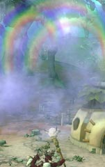

目次 > ゲームについて > シミュレーション攻略 > SPORE > 継承アビリティー一覧
| 概要 | 情報 | ステージ攻略 |
| コレクション一覧 | 継承アビリティー一覧 | アチーブメント一覧 |
| SPORE 攻略へ | 目次へ戻る |
| [ クリーチャーステージ ] [ 集落ステージ ] [ 文明ステージ ] [ 宇宙ステージ ] |
| クリーチャーステージ |
| 名前 | 条件 | 能力 |
| 激しいうなり声 | 肉食(細胞) | クリーチャーを追い返すことができる場合がある |
| セイレーンの歌 | 草食(細胞) | 敵対するクリーチャーを一時的におとなしくする(攻撃を仕掛けてくるクリーチャーに対しても有効) ただし、「壮大な○○」というクリーチャーには無効 |
| 群衆の召喚 | 雑食(細胞) | 一時的にクリーチャーを召喚し、戦わせる |
| 名前 | 条件 | 能力 |
| 集落ステージ |
| 名前 | 条件 | 能力 |
| 罠 | 肉食(細胞) | 偽物の食事を起き、近づいたクリーチャーを倒す |
| 実りの嵐 | 草食(細胞) | 果物(?)が収穫できる木のそばで使うと、大量の果物(?)が地面に落ちる。  |
| トビウオ | 雑食(細胞) | 漁場で使うと、クリーチャーパートでさんざん食べられたアイツが出てきて、魚を大量にプレゼントしてくれる |
| 火炎爆弾 | 捕食(クリーチャー) | 村長の近くの建物やクリーチャーにダメージを与える攻撃 |
| 花火 | 社交(クリーチャー) | 他のクリーチャーに対する好感度を上げる |
| ビーストマスター | 順応性(クリーチャー) | 能力発動時に村長の周囲にいるクリーチャーを、(ハーメルンの笛吹き男のように)村長と同じ位置に移動させられる |
| 名前 | 条件 | 能力 |
| 文明ステージ |
| 名前 | 条件 | 費用 | 能力 |
| 無敵 | 肉食(細胞) | ||
| 回復オーラ | 草食(細胞) | 2000 | 指定した範囲内にある乗り物の耐久力を回復する |
| 静止爆弾 | 雑食(細胞) | 2000 | 一時的に指定した都市の乗り物、砲台、施設の動きを止める |
| 強化爆弾 | 捕食(クリーチャー) | ||
| 外交修道僧 | 社交(クリーチャー) | 4000 | 指定した都市との関係を向上させる |
| ワイロ爆弾 | 順応性(クリーチャー) | ||
| ガジェット爆弾 | 攻撃的(集落) | ||
| 暗雲 | 友好的(集落) | ||
| 広告キャンペーン | 勤勉(集落) | ||
| ICBM | 軍事的(文明) | 36000 | 全ての都市を破壊する。 破壊された建物は一定時間放射能(だと思う)に汚染され、がれきが撤去できなくなる。 |
| ? | 経済的(文明) | ||
| 強力な転向 | 宗教的(文明) | 48000 | すべての都市を改教させる |
| 名前 | 条件 | 費用 | 能力 |
| 宇宙ステージ |
| 名前 | 条件 | 能力 |
| 力の亡者 | 肉食(細胞) | |
| 社交的な丁寧さ | 草食(細胞) | |
| 紳士的なジェネラリスト | 雑食(細胞) | |
| 高度生命体 | 捕食(クリーチャー) | |
| 幸福 | 社交(クリーチャー) | |
| スピードデーモン | 順応性(クリーチャー) | |
| 武器商人 | 攻撃的(集落) | |
| 優雅な挨拶 | 友好的(集落) | |
| コロニーの流行 | 勤勉(集落) | |
| 海賊お断り | 軍事的(文明) | |
| スパイス学者 | 経済的(文明) | |
| 緑の管理者 | 宗教的(文明) | |
| 沈静の歌 | 吟遊詩人(宇宙) | |
| サファリ・バキューム | エコロジスト(宇宙) | その星にある全ての植物・動物をそれぞれ2個ずつ回収する |
| 強烈な熱狂 | 狂信者(宇宙) | |
| 静電接着 | 外交官(宇宙) | |
| 重力波 | 科学者(宇宙) | |
| 資金投入 | 貿易商(宇宙) | |
| 帰りの切符 | シャーマン(宇宙) | 母星へ移動できる |
| 侵略者集結 | 戦士(宇宙) | 宇宙海賊を一時的に呼びだし、攻撃させる |
| 名前 | 条件 | 能力 |
| [ クリーチャーステージ ] [ 集落ステージ ] [ 文明ステージ ] [ 宇宙ステージ ] |
| 概要 | 情報 | ステージ攻略 |
| コレクション一覧 | 継承アビリティー一覧 | アチーブメント一覧 |
| ページの上部へ | SPORE 攻略へ | 目次へ戻る |